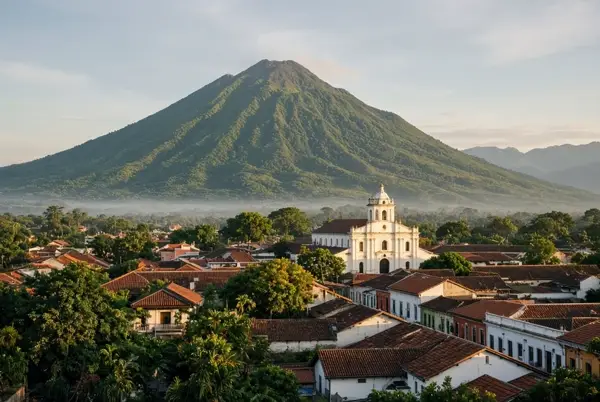

El Salvador

Data
- Area
- 21,041 km²
- Population
- 6.3 million
- Capital
- San Salvador
- Languages
- Spanish
- Currency
- United States Dollar
- Time Zone
- CST (UTC-6)
Weather
- Temperature
- 9 °C
- Conditions
- Cool highland morning
- Wind
- 18 km/h
- Wind Chill
